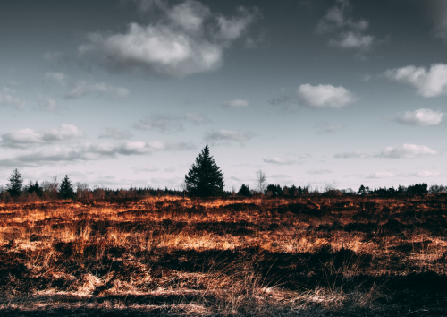

¿Cómo nos afectarán los incendios forestales? ¿Más humedales y menos incendios?
Hablamos con Facundo Báez, activista ambiental de Consciente Colectivo Argentina para entender cómo
afecta los incendios al ecosistema.
También conversamos con el pampeano Gustavo Romero sobre la situación de la provincia.

Noticia del día
19/9
El presidente presentó
el nuevo gabinete a los gobernadores.
Noticias
La carta de Cristina en medio de la crisis política
La vicepresidenta Cristina Kirchner publicó ayer una carta en medio de la…
política
Crisis en el Frente de Todos: el mensaje del Ziliotto
En el día de ayer, miércoles, tres días después de las PASO,…
Emprendedores
Vestidos de novia, de La Pampa a España
En plena pandemia y crisis en su rubro, Novias María Luján, fue convocada para el Madrid Bridal Fashion
Week...